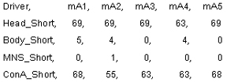
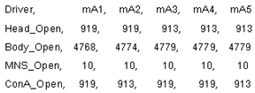
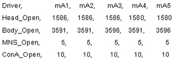
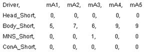
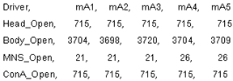
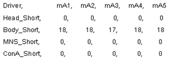
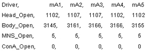

Proprietary to General Electric Company
Direction 5440000, Rev# 5
Signa HDxt Service Methods
Module Version 1.0, Version Date 4/26/07
Proprietary to General Electric Company |
This file contains test data concerning the Head, Body, MNS, and 8-channel connector ‘A’ (ConA) TR Bias circuits. Five different samples are taken (mA1 to mA5) for each condition. Note that a small variation between samples is not unusual. See the comments to the right of each section of data for an explanation of what is being checked. There are 4 sections to this document, make sure you are referencing the proper section.
1.5T system with the new forward production LPCA.
1.5T system with the old (Excite based) LPCA.
3.0T system with the new forward production LPCA.
3.0T system with the old (Excite based) LPCA.
 | In this mode the TR-bias lines are reverse-biased and checked for current leakage. The leakage current should be low and look like what is shown on the left. Notice that some normal low leakage is present on the body line. TR-bias is delivered on the E1 transmit line in the 8-channel ‘A’ connector (ConA). |
 | In this mode the TR-bias lines are forward-biased and checked for current. The current values partly depend on transmission line length so the values you see may be somewhat different from those shown. The difference between head and body values, however, should be similar. In this case no MNS hardware was connected. No coil was connected to the 8-channel ‘A’ connector (ConA). |
| In this mode the TR-bias lines are reverse-biased and checked for current leakage. The leakage current should be low and look like what is shown on the left. Notice that some normal low leakage is present on the body line. TR-bias is delivered on the E1 transmit line in the 8-channel ‘A’ connector (ConA). | |
 | In this mode the TR-bias lines are forward-biased and checked for current. The current values partly depend on transmission line length so the values you see may be somewhat different from those shown. The difference between head and body values, however, should be similar. In this case no MNS hardware was connected. No coil was connected to the 8-channel ‘A’ connector (ConA). |
 | In this mode the TR-bias lines are reverse-biased and checked for current leakage. The leakage current should be low and look like what is shown on the left. Notice that some normal low leakage is present on the body line. TR-bias is delivered on the E1 transmit line in the 8-channel ‘A’ connector (ConA). |
 | In this mode the TR-bias lines are forward-biased and checked for current. The current values partly depend on transmission line length so the values you see may be somewhat different from those shown. The difference between head and body values, however, should be similar. In this case no MNS hardware was connected. No coil was connected to the 8-channel ‘A’ connector (ConA). |
 | In this mode the TR-bias lines are reverse-biased and checked for current leakage. The leakage current should be low and look like what is shown on the left. Notice that some normal low leakage is present on the body line. TR-bias is delivered on the E1 transmit line in the 8-channel ‘A’ connector (ConA). |
 | In this mode the TR-bias lines are forward-biased and checked for current. The current values partly depend on transmission line length so the values you see may be somewhat different from those shown. The difference between head and body values, however, should be similar. In this case no MNS hardware was connected. No coil was connected to the 8-channel ‘A’ connector (ConA). |